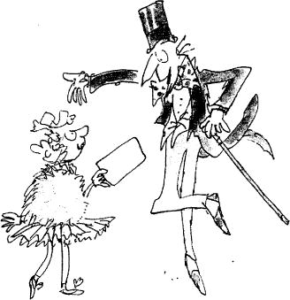

Mr Wonka was standing all alone just inside the open gates of the factory.
And what an extraordinary little man he was!
He had a black top hat on his head.
He wore a tail coat made of a beautiful plum-coloured velvet.
His trousers were bottle green.
His gloves were pearly grey.
And in one hand he carried a fine gold-topped walking cane.
Covering his chin, there was a small, neat, pointed black beard – a goatee. And his eyes – his eyes were most marvellously bright. They seemed to be sparkling and twinkling at you all the time. The whole face, in fact, was alight with fun and laughter.
And oh, how clever he looked! How quick and sharp and full of life! He kept making quick jerky little movements with his head, cocking it this way and that, and taking everything in with those bright twinkling eyes. He was like a squirrel in the quickness of his movements, like a quick clever old squirrel from the park.
Suddenly, he did a funny little skipping dance in the snow, and he spread his arms wide, and he smiled at the five children who were clustered near the gates, and he called out, ‘Welcome, my little friends! Welcome to the factory!’
His voice was high and flutey. ‘Will you come forward one at a time, please,’ he called out, ‘and bring your parents. Then show me your Golden Ticket and give me your name. Who’s first?’
The big fat boy stepped up. ‘I’m Augustus Gloop,’ he said.
‘Augustus!’ cried Mr Wonka, seizing his hand and pumping it up and down with terrific force. ‘My dear boy, how good to see you! Delighted! Charmed! Overjoyed to have you with us! And these are your parents? How nice! Come in! Come in! That’s right! Step through the gates!’
Mr Wonka was clearly just as excited as everybody else.
‘My name,’ said the next child to go forward, ‘is Veruca Salt.’
‘My dear Veruca! How do you do? What a pleasure this is! You do have an interesting name, don’t you? I always thought that a veruca was a sort of wart that you got on the sole of your foot! But I must be wrong, mustn’t I? How pretty you look in that lovely mink coat! I’m so glad you could come! Dear me, this is going to be such an exciting day! I do hope you enjoy it! I’m sure you will! I know you will! Your father? How are you, Mr Salt? And Mrs Salt? Overjoyed to see you! Yes, the ticket is quite in order! Please go in!’
The next two children, Violet Beauregarde and Mike Teavee, came forward to have their tickets examined and then to have their arms practically pumped off their shoulders by the energetic Mr Wonka.
And last of all, a small nervous voice whispered, ‘Charlie Bucket.’
‘Charlie!’ cried Mr Wonka. ‘Well, well, well! So there you are! You’re the one who found your ticket only yesterday, aren’t you? Yes, yes. I read all about it in this morning’s papers! Just in time, my dear boy! I’m so glad! So happy for you! And this? Your grandfather? Delighted to meet you, sir! Overjoyed! Enraptured! Enchanted! All right! Excellent! Is everybody in now? Five children? Yes! Good! Now will you please follow me! Our tour is about to begin! But do keep together! Please don’t wander off by yourselves! I shouldn’t like to lose any of you at this stage of the proceedings! Oh, dear me, no!’
Charlie glanced back over his shoulder and saw the great iron entrance gates slowly closing behind him. The crowds on the outside were still pushing and shouting. Charlie took a last look at them. Then, as the gates closed with a clang, all sight of the outside world disappeared.
‘Here we are!’ cried Mr Wonka, trotting along in front of the group. ‘Through this big red door, please! That’s right! It’s nice and warm inside! I have to keep it warm inside the factory because of the workers! My workers are used to an extremely hot climate! They can’t stand the cold! They’d perish if they went outdoors in this weather! They’d freeze to death!’
‘But who are these workers?’ asked Augustus Gloop.
‘All in good time, my dear boy!’ said Mr Wonka, smiling at Augustus. ‘Be patient! You shall see everything as we go along! Are all of you inside? Good! Would you mind closing the door? Thank you!’
Charlie Bucket found himself standing in a long corridor that stretched away in front of him as far as he could see. The corridor was so wide that a car could easily have been driven along it. The walls were pale pink, the lighting was soft and pleasant.
‘How lovely and warm!’ whispered Charlie.
‘I know. And what a marvellous smell!’ answered Grandpa Joe, taking a long deep sniff. All the most wonderful smells in the world seemed to be mixed up in the air around them – the smell of roasting coffee and burnt sugar and melting chocolate and mint and violets and crushed hazelnuts and apple blossom and caramel and lemon peel…
And far away in the distance, from the heart of the great factory, came a muffled roar of energy as though some monstrous gigantic machine were spinning its wheels at breakneck speed.
‘Now this, my dear children,’ said Mr Wonka, raising his voice above the noise, ‘this is the main corridor. Will you please hang your coats and hats on those pegs over there, and then follow me. That’s the way! Good! Everyone ready? Come on, then! Here we go!’ He trotted off rapidly down the corridor with the tails of his plum-coloured velvet coat flapping behind him, and the visitors all hurried after him.
It was quite a large party of people, when you came to think of it. There were nine grown-ups and five children, fourteen in all. So you can imagine that there was a good deal of pushing and shoving as they hustled and bustled down the passage, trying to keep up with the swift little figure in front of them. ‘Come on!’ cried Mr Wonka. ‘Get a move on, please! We’ll never get round today if you dawdle like this!’
Soon, he turned right off the main corridor into another slightly narrower passage.
Then he turned left.
Then left again.
Then right.
Then left.
Then right.
Then right.
Then left.
The place was like a gigantic rabbit warren, with passages leading this way and that in every direction.
‘Don’t you let go my hand, Charlie,’ whispered Grandpa Joe.
‘Notice how all these passages are sloping downwards!’ called out Mr Wonka. ‘We are now going underground! All the most important rooms in my factory are deep down below the surface!’
‘Why is that?’ somebody asked.
‘There wouldn’t be nearly enough space for them up on top!’ answered Mr Wonka. ‘These rooms we are going to see are enormous! They’re larger than football fields! No building in the world would be big enough to house them! But down here, underneath the ground, I’ve got all the space I want. There’s no limit – so long as I hollow it out.’
Mr Wonka turned right.
He turned left.
He turned right again.
The passages were sloping steeper and steeper downhill now.
Then suddenly, Mr Wonka stopped. In front of him, there was a shiny metal door. The party crowded round. On the door, in large letters, it said:
THE CHOCOLATE ROOM